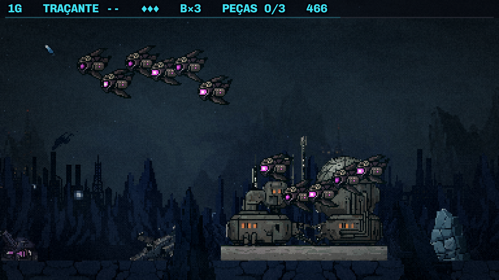
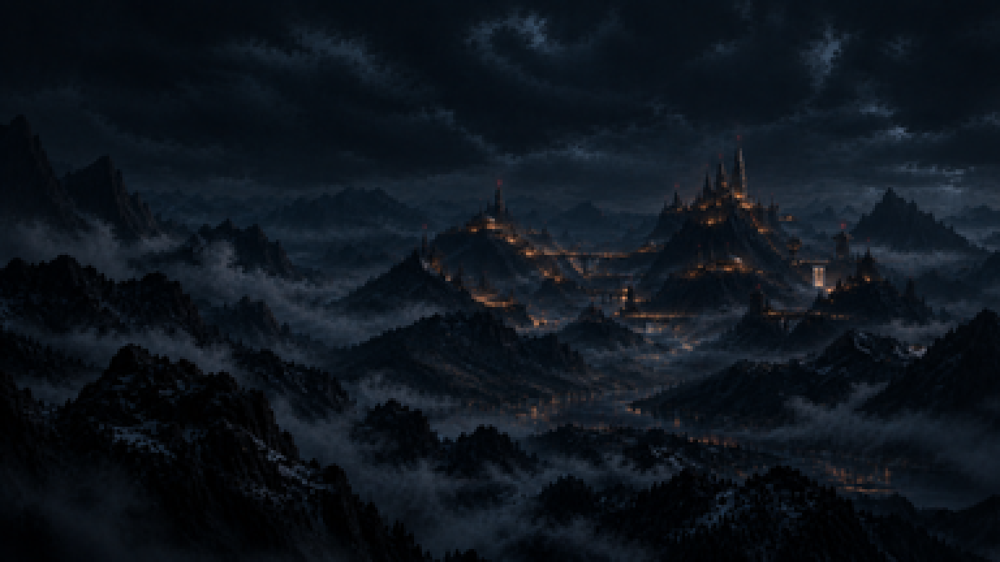
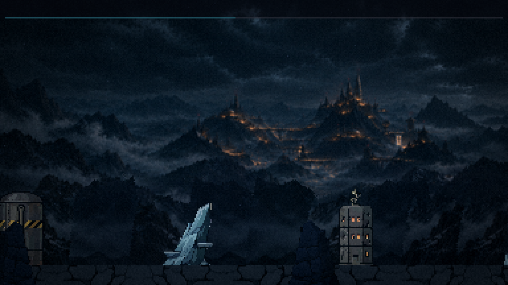
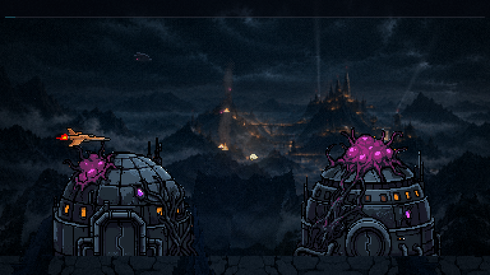
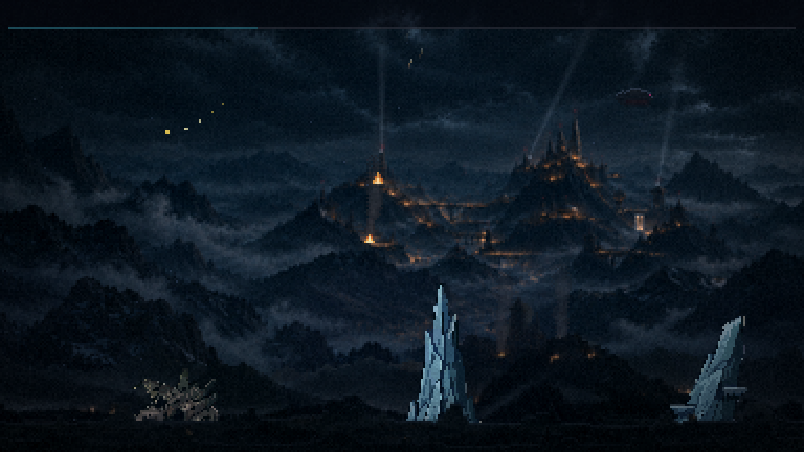

Fase 1 refeita · bloco G
20/10/2026. Rodada por rodada. Nada foi commitado. O jogo no localhost:5173 tem as rodadas 1, 2, 4 e 5. A rodada 5 nasceu do seu retorno: o chão saiu das suas duas pinturas novas, a cordilheira e o ladrilho saíram, e a morte do chefão ficou maior. As estruturas (rodada 3) vão ser refeitas escuras na próxima.
Antes de começar

A fase como estava
O ponto de partida: as camadas antigas e o que destoava.

A sua pintura no tamanho do jogo
A pintura inteira, 429×216.
As rodadas

1 · A pintura e as camadas no jogo
A pintura inteira com os faróis piscando e a cachoeira, a cordilheira tirada da pintura, a bruma, o chão na paleta dela, o tratamento recalculado.
Seu retorno: a pintura viva e a bruma aprovadas; a cordilheira e o chão reprovados → rodada 5.

2 · A invasão no jogo
A colônia cai pela luz: janelas apagando de fora para dentro, magenta, holofotes e artilharia caindo, naves descendo, explosões ao longe, fogo e fumaça, a ponta da cidadela tomada.
Seu retorno: aprovada ("perfeita").

3 · As peças do chão refazer
Conceitos no tamanho de jogo, plantados na fase: os módulos de cúpula, os bunkers, os silos, as antenas, a cúpula grande, a torre invasora, os pilares e os destroços.
Seu retorno: claras demais ("nem parece um dark sci-fi"), e tudo no chão parecia colado. O chão foi refeito na rodada 5; as peças serão refeitas escuras, com as suas pinturas de referência.

4 · O chefão e a subida no jogo
As plumas dos propulsores, a poeira da queda do Leviatã na decolagem, a explosão da queda na morte e a nave a 45° na subida.
Seu retorno: aprovada; a morte do chefão maior e mais violenta → rodada 5.

5 · O chão e a morte do chefão no jogo
As suas duas pinturas em faixas sem emenda (o Vale atrás, a Paisagem na frente dele), as estruturas plantadas entre a Paisagem e o entulho da frente, o primeiro plano novo, as brasas tremulando e a fumaça das torres; a morte da Torre com a cadeia, o estouro de 250 px, os estilhaços e o incêndio.
Seu retorno: a cadência de tons e a parede da fumaça corrigidas (5b) → "agora sim, ficou perfeito".

6 · As estruturas no escuro no jogo
A rodada 3 refeita: as cúpulas da colônia com o gótico das suas pinturas crescendo delas, a sua cidadela como referência de estilo, sem contorno, no tom da cena. Instaladas com a sua escolha, em 75% do tamanho, com as luzes assadas, os pilares em alturas assadas e os aglomerados da colônia ao fundo.
Você decide: a escala, as luzes, os aglomerados.
Para jogar
- No menu, 1 começa a F1 direto.
- As estruturas ainda são as antigas (os pilares azul-gelo, o silo listrado): destoam até a rodada das peças escuras.